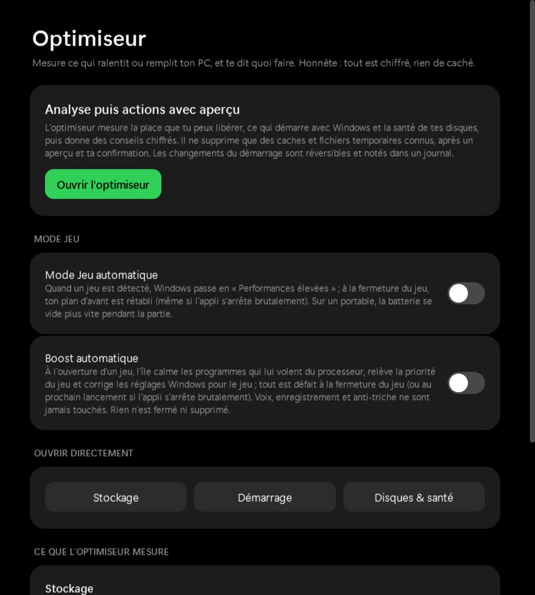

Un PC propre
Un PC propre, sans risque.
Mesure ce qui ralentit ou remplit ton PC et te dit quoi faire. Tout est chiffré, rien n'est caché.

Mesures honnêtes
Tu vois ce qui prend de la place ou de la mémoire, avec des chiffres, avant de décider.
Réversible
Les réglages sont notés sur le disque avant d'être changés, et le boost défait tout à la fermeture du jeu.
Maintenance automatique
Un nettoyage régulier des caches sans risque, seulement quand le PC est au repos : jamais en jeu, ni sur batterie. Désactivée tant que tu ne l'actives pas.